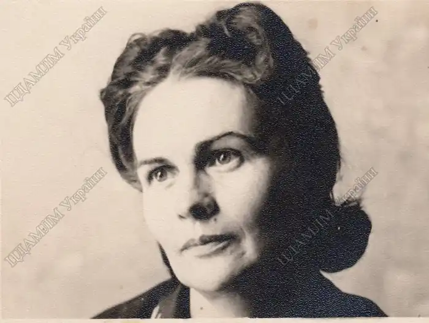
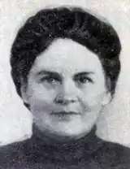

Лариса Михайлівна Письменна народилася 11 лютого 1914 року в селі Чоповичах на Житомирщині в сім'ї фельдшера та вчительки. В оповіданні "Кіт Микита" письменниця розповідала, що батько "був веселий та добрий на вдачу, вмів усіх розважити, хоч як би там не було скрутно й сумно. І то дуже добре, бо працював він фельдшером, а розвеселити хвору людину іноді й краще, ніж давати їй ліків. Та й ліків у ті роки часто зовсім не було. А мама була строга. Сумна і строга. Навіть батькові не завжди вдавалось її розвеселити. Я її трохи побоювалась, бо мене за пустощі карала тільки мама і ніколи не карав батько. Правда, карала завжди справедливо, тут уже нічого не скажеш".
Проте пустощів та веселощів у дитинстві майбутньої письменниці було небагато. Часи були голодні і тривожні. Йшла громадянська війна. А по її закінченні Лариса вчилася у трудовій школі, працювала на пришкільній ділянці, допомагала по господарству вдома і багато читала. Навіть пробувала сама щось вигадувати. Час ішов швидко. Вона закінчила семирічку, вирішила вчитися далі — вступила до технікуму в м. Біла Церква, що на Київщині. Писала вірші. Один із них сподобався її товаришу і він надіслав його до журналу в Харків. Вірш надрукували. І юна поетеса не знаходила собі місця від радощів, однак вчасно зрозуміла, що для справжньої творчості потрібні літературні знання. Лариса спробувала вступити в Інститут народної освіти в Києві, але їй не пощастило. Не довго думаючи, пішла вчитися в Київській лісотехнічний інститут. Проте це не було її покликанням. У той час Л. Письменна вийшла заміж, народила сина.
Війна з німецькими загарбниками змінила життя Лариси Письменної. Як і тисячі мирних жителів, виїхала вона на схід, у Сибір. Там, у невеличкому шахтарському містечку Анжеро-Судженську, що в Кемеровській області, не було чути вибухів снарядів і бомб, але відгомін війни долинув і туди. Скорботна звістка надійшла з фронту і Ларисі Михайлівні — загинув її чоловік. Невдовзі тяжко захворів її маленький син. Підкосила недуга і її саму. Допомогли їй у військкоматі — запропонували організувати садочок для дітей фронтовиків. Нова робота допомогла молодій жінці здолати недугу, загоїти душевний біль. Одного разу, коли діти в обідню пору лягли в ліжечка, Лариса Михайлівна, знаючи, як вони сумують без іграшок і книжок, розповіла казку, яку сама вигадала — про воїна, котрий переміг усіх фашистів. Маленьким слухачам казка сподобалась і вони просили розповідати ще і ще. Ларисі Письменній нічого не залишалось, як щодня вигадувати все нові й нові казки та оповідання. Адже вона, як рідна мати, любила своїх вихованців, брала близько до серця їхнє горе, прагнула розважити і розвеселити. Робота з дітьми захопила Ларису Михайлівну. Вона закінчила Кемеровське дошкільне педагогічне училище і вже з новою улюбленою спеціальністю повернулася після війни додому, в Україну. Працювала завідувачкою дитячого садочка в місті Черкаси і продовжувала складати казки та оповідання для своїх вихованців. Згодом, записавши їх, наважилася надіслати до журналу "Радянська жінка". І перше її оповідання побачило світ на сторінках цього часопису в 1951 році. А вже у 1955 році видавництво "Молодь" надрукувало і першу книжку оповідань "Томка з Боготола". У цей же час молода письменниця одержала на республіканському конкурсі заохочувальну премію за пригодницьку повість "Скарб Вовчої криниці". І надалі Лариса Письменна не поривала з дітьми: переїхавши у Київ, працювала завідувачкою редакції дошкільної літератури у відомому всім дитячому видавництві "Веселка". Відтоді вона написала велику низку казок, оповідань, повістей як для дошкільнят і дітей молодшого шкільного віку, так і для підлітків та старшокласників. Найвідоміші з них: "Золотогривий" (1957), "Павлик-Равлик"(1959), "Як Петрик на дні моря жив" (1960), "Голубий олень" (1961), "Богатир Жовте Око" (1963), "Як у Чубасика сміх украли" (1965), "Жар-пташенята" (1967), "Півень Зелене Колесо" (1970), "Тисяча вікон і один журавель" (1971), "Чарівник на тонких ніжках" (1972), "Чап-Чалап" (1973), "Чарівний штурвал" (1975), "Не за синіми морями" (1980), "Неспокійні друзі" (1981), "Там, де живе Синя Ластівка" (1986), "Казки небом криті, а вітром підбиті" (1990). У кожному своєму творі письменниця ненав'язливо, весело, вигадливо навчає людяності, доброті, вірності, дружбі. І про щоденну людську працю вона розповідає гарно, романтично, з усмішкою. Легко і радісно читаються її оповідання про живу природу, яку Лариса Письменна тонко відчувала, любила тварин і вміла іншим прищепити любов до всього живого. У творчому доробку Лариси Михайлівни є романи і повісті для дорослих. Недарма за письменницьку й громадську працьовитість та активність Ларису Михайлівну нагороджено орденом "Знак Пошани", Почесною Грамотою Президії Верховної Ради УРСР. Твори письменниці перекладалися грузинською, естонською, литовською, німецькою, румунською, російською мовами.